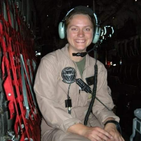
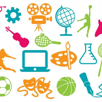

Resume
Experience
- Investment Management Intern, Minneapolis, MN
- Employment Dates: February 2018-Present
- Used SQL, SSIS and VBA to automate Quarterly Processes. Decreased process hours by 75%.
- Used SQL and VBA to automate Real World Risk Neutral processes
- President
- Employment Dates: February 2013-June 2022
- Posting multiple Facebook posts and monitoring a page with over 100,000 fans
- Researching microchips and tags with old information through social media and the internet
- Maintaining the schedule and managing 30 volunteers
- Training new volunteers on how to use Facebook and our website database to run a page
- Deciding which applicants will complement our team best
- Redesigned our business brochures, webpage, and Facebook page
-
Loadmaster on C130
- Employment Dates: August 2007-May 2012
- Graduated first in my loadmaster class
- Achieved a 93 out of 99 in my ASVAB, the military test for math, mechanics, spatial reasoning, and English
- Performed load plans on C130’s, involving calculating placement of cargo loads which ensure a level plane
- Figured out the amount of restraint needed to ensure cargo did not move in flight
- In charge of seven plane’s documents, making sure they were up to date, in the right plane, and accounted for
- Organized the schedule of 12 loadmasters

Skills
- Intermediate business experience in SQL and SSIS
- Intermediate business experience in Excel and PowerBI
- Intermediate business experience in VBA
- College courses in Java, R, Python, C, MATLAB, Linux, html, JMP, and Minitab
Campus Activities and Interests
- Crew Club
- Veterans Groups- DAV, Marine Corps League, UST Veteran’s Group
- Gamma Iota Sigma
- Math and Actuarial Science Club
- Buying and renting out homes
